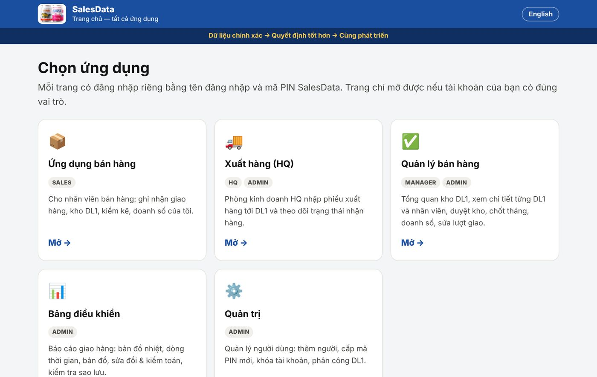
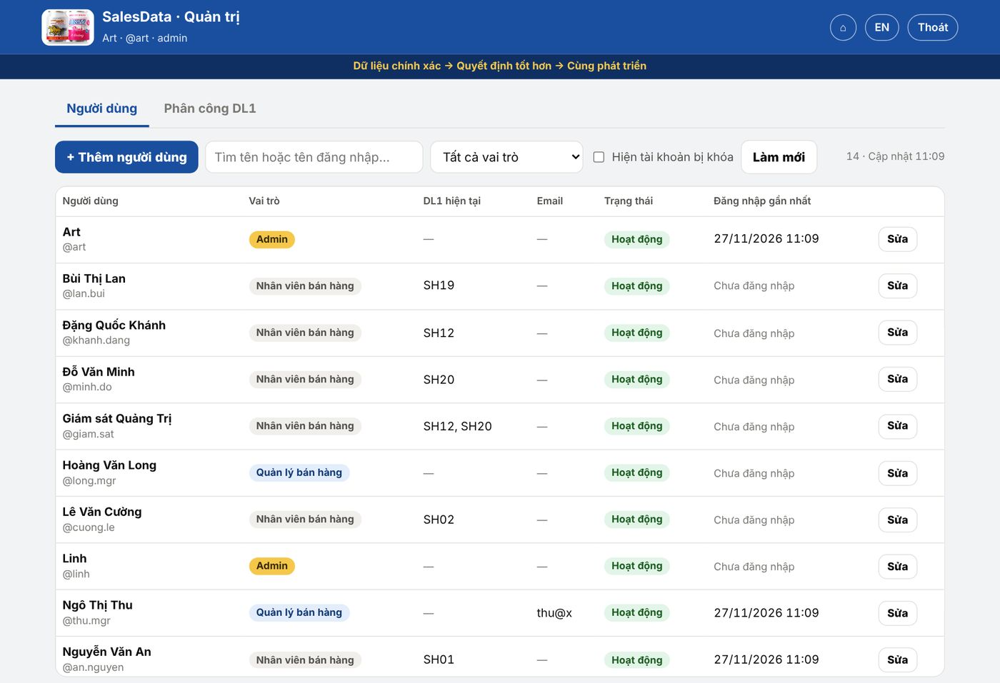
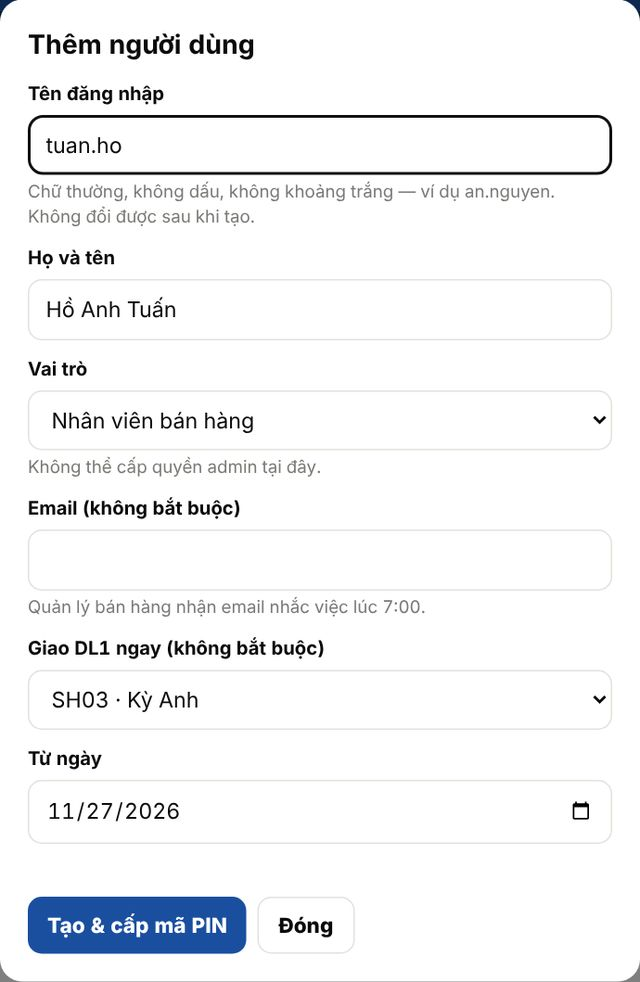
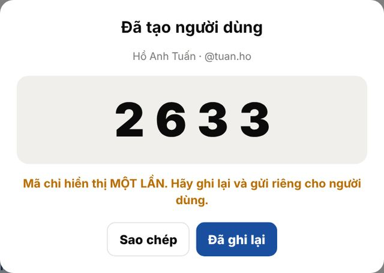
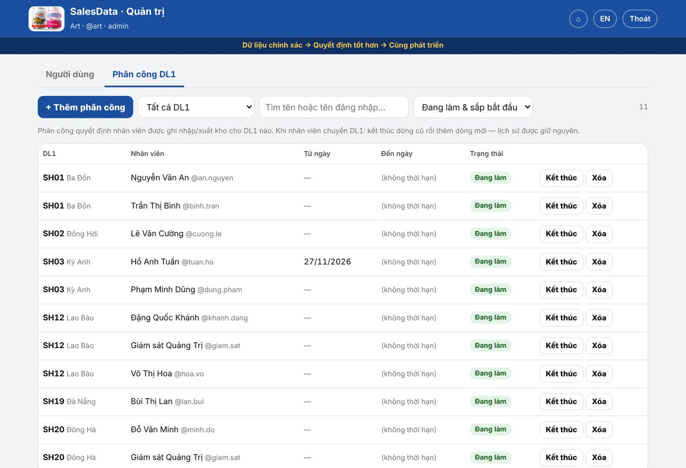
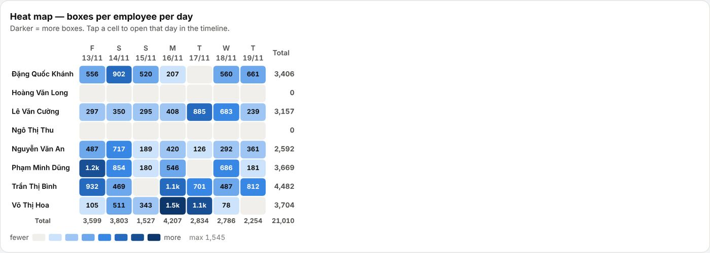
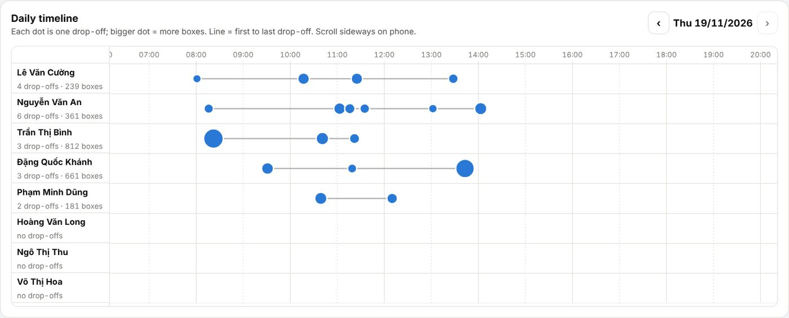
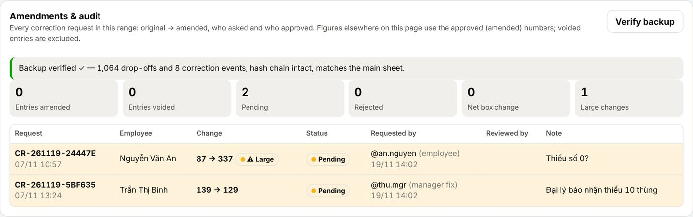

Báo cáo, người dùng và kiểm toánReporting, users and audit
Admin là chủ sở hữu quy trình: quản lý người dùng, xem toàn bộ báo cáo, theo dõi mọi sửa đổi và kiểm tra bản sao lưu. The admin is the process owner: you manage users, see all reporting, follow every amendment and verify the backup.
1Vai trò và quyềnRoles and access
| Vai trò (cột Role)Role (Role column) | TrangPage | Được làmCan do |
|---|---|---|
| (trống) Nhân viên bán hàng(blank) Sales staff | index.html | Ghi lượt giao, nhập/xuất kho DL1, kiểm kê, xem doanh số của mình, báo lỗi.Log drop-offs, DL1 stock in/out, stocktakes, view own sales, report mistakes. |
hq Phòng kinh doanh HQSales officer (HQ) | hq.html | Nhập phiếu xuất hàng cho DL1, xem trạng thái nhận, hủy phiếu chưa nhận.Enter dispatches to DL1s, see receipt status, cancel unreceived dispatches. |
manager Quản lý bán hàngSales manager | manager.html | Tổng quan kho DL1, duyệt điều chỉnh kho, chốt tháng, doanh số, duyệt sửa lượt giao.DL1 stock overview, approve stock adjustments, close months, sales, review drop-off fixes. |
admin (Art, Linh)(Art, Linh) | Tất cả + admin.html, dashboard.htmlAll + admin.html, dashboard.html | Mọi thứ ở trên, cộng quản lý người dùng & phân công, báo cáo, kiểm toán, kiểm tra sao lưu, mở lại tháng đã chốt.Everything above, plus users & assignments, the dashboard, audit, Verify backup, and reopening closed months. |
Không ai được duyệt mục của chính mình — kể cả admin. Mọi trang mở được từ trang chủ portal.html; mỗi trang có nút ⌂ quay về đó.Nobody can approve their own entry, including the admin. Every page opens from the home page portal.html; each page has a ⌂ button back to it.

2Người dùng (admin.html)Users (admin.html)
Mở admin.html bằng tài khoản admin. Mọi thay đổi có hiệu lực ngay và được ghi vào tab Audit (trừ chính mã PIN). Không cần mở Google Sheet. Open admin.html with an admin account. Every change takes effect at once and is logged in the Audit tab (except the PIN itself). No need to open the Google Sheet.



| Việc cần làmTask | Cách làmHow |
|---|---|
| Thêm ngườiAdd someone | Thêm người dùng: username (viết thường, không dấu, 3+ ký tự — không đổi được sau), họ tên, vai trò, email (tùy chọn), giao DL1 ngay (tùy chọn). Bấm Tạo & cấp mã PIN — hệ thống tạo PIN 4 số. Ghi lại PIN (chỉ hiện một lần) và gửi riêng cho người đó.Add user: username (lowercase, no accents, 3+ characters; can't be changed later), full name, role, email (optional), assign a DL1 now (optional). Tap Create & issue PIN; the system makes a 4-digit PIN. Note it (shown once) and send it to that person privately. |
| Đặt lại PINReset a PIN | Sửa → Cấp mã PIN mới. Mã cũ và các phiên đăng nhập ngừng hoạt động ngay.Edit → Issue new PIN. The old PIN and open logins stop working at once. |
| Khóa / mở khóaBlock / unblock | Sửa → bỏ chọn Tài khoản đang hoạt động → Lưu. Bị chặn ngay, kể cả phiên đang mở. Dữ liệu cũ vẫn giữ. Tick "Hiện tài khoản bị khóa" để thấy và mở lại.Edit → untick Account active → Save. They're out at once, even mid-session. Past data stays. Tick "Show blocked accounts" to find and unblock them. |
| Đổi tên, vai trò, emailChange name, role, email | Bấm Sửa. Đổi vai trò sẽ đăng xuất họ. Điền email cho quản lý để nhận email nhắc buổi sáng.Tap Edit. A role change signs them out. Give managers an email for the morning reminder. |
| Quy tắc PINPIN rules |
|---|
| Hệ thống tự tạo: đúng 4 chữ số, 1000–9999, không trùng người khác, không dạng dễ đoán (1234, 1111, 1212, năm 19xx/20xx…).Made by the system: exactly 4 digits, 1000–9999, unique, no easy patterns (1234, 1111, 1212, years 19xx/20xx…). |
Không gán được vai trò admin qua admin.html, và không sửa/khóa được tài khoản admin khác. Admin chỉ đặt lại được PIN của chính mình. Thêm/bớt admin chỉ làm trực tiếp trong tab Users của Google Sheet.The admin role can't be given through admin.html, and other admin accounts can't be edited or blocked there. An admin can only reset their own PIN. Adding or removing an admin is done only in the Users tab of the Google Sheet.
3Phân công nhân viên cho DL1Assigning staff to DL1s
Tab Phân công DL1 trong admin.html. Mỗi dòng: nhân viên, DL1, từ ngày, đến ngày (để trống = đang phụ trách). Một người có thể phụ trách nhiều DL1 (ví dụ giám sát); một DL1 có thể có nhiều người. The Assignments tab in admin.html. Each row: employee, DL1, from, to (blank = current). One person can cover several DL1s (e.g. a supervisor); one DL1 can have several people.

| Chuyển DL1Move to another DL1 | Bấm Kết thúc trên dòng cũ (điền ngày kết thúc), rồi thêm dòng mới. Lịch sử được giữ cho báo cáo doanh số theo nhóm.Tap End on the old row (sets the end date), then add a new row. The history is kept for team sales reports. |
| XóaDelete | Chỉ dùng khi nhập nhầm. Bình thường hãy dùng Kết thúc.Only for a mistaken row. Normally use End. |
| Không phân côngNo assignment | Nhân viên vẫn ghi được lượt giao (không có DL1), nhưng không thấy tab Kho DL1.Staff can still log drop-offs (without a DL1) but see no DL1 stock. |
Danh sách DL1The DL1 list
DL1 được quản lý trong tab DL1s của Google Sheet (không qua admin.html): mã, tên, vĩ độ, kinh độ, Active (TRUE/FALSE), tồn tối thiểu, ghi chú. Tọa độ dùng cho ★ kho trên bản đồ — nên lấy tọa độ chính xác tại kho. DL1s are kept in the DL1s tab of the Google Sheet (not in admin.html): code, name, latitude, longitude, Active (TRUE/FALSE), minimum stock, notes. The coordinates place the ★ warehouse on the map, so use exact readings taken at the warehouse.
4Bảng điều khiển (dashboard)The dashboard
Mở dashboard.html và đăng nhập bằng tài khoản admin. Chọn khoảng thời gian và nhân viên ở thanh lọc trên cùng. Trang tự làm mới mỗi 5 phút. Open dashboard.html and log in with your admin account. Pick the date range and employee in the filter bar at the top. The page refreshes every 5 minutes.

| MụcSection | Cho biếtTells you |
|---|---|
| Ô chỉ sốKPI tiles | Tổng thùng, số lượt, TB/lượt, nhân viên hoạt động, thùng/người/ngày, % GPS xanh — so với kỳ trước cùng độ dài.Boxes, drop-offs, avg per drop-off, active staff, boxes per staff-day, GPS green %, compared with the previous period of the same length. |
| Sửa đổi & kiểm toánAmendments & audit | Mọi yêu cầu sửa (xem mục 5).Every correction (see section 5). |
| Thùng theo ngày · Giờ trong ngàyBoxes per day · Time of day | Xu hướng và giờ giao hàng.Trend and delivery hours. |
| Bản đồ nhiệtHeat map | Nhân viên × ngày. Ô trống = không giao. Chạm một ô để mở ngày đó trên dòng thời gian.Employee × date. Blank cells = no deliveries. Tap a cell to open that day in the timeline. |
| Dòng thời gianDaily timeline | Mỗi chấm là một lượt (to = nhiều thùng); đường kẻ = lượt đầu đến lượt cuối. Chấm viền cam = đã sửa/đang chờ.Each dot is a drop-off (bigger = more boxes); the line runs first to last. Orange-ringed dots = amended or pending. |
| Bản đồMap | Mọi điểm giao trong khoảng thời gian.Every drop-off location in the range. |
| Hiệu suất nhân viênEmployee performance | Bảng sắp xếp được theo mọi cột.Table you can sort by any column. |
| Kiểm tra dữ liệuData checks | Có thể trùng (cùng người, <15 phút, <100 m), trên 500 thùng, GPS cam, gửi sau.Possible duplicates (same person, <15 min, <100 m), over 500 boxes, GPS orange, sent later. |
| Xuất CSVExport CSV | Tải dữ liệu đã lọc cho Excel, gồm số gốc, số đã duyệt và trạng thái.Downloads the filtered data for Excel, with original boxes, approved boxes and status. |


Bảng điều khiển báo cáo lượt giao. Tồn kho và doanh số theo DL1 nằm ở manager.html (admin cũng vào được).The dashboard reports drop-offs. DL1 stock and team sales are in manager.html (admins can open it too).
Mọi số liệu dùng số đã duyệt; mục đã hủy không được tính. Vì vậy tổng trên báo cáo có thể khác tổng cột Boxes trong tab Dropoffs — đó là đúng.All figures use the approved numbers, and voided entries are excluded. So dashboard totals can differ from summing the Boxes column in the Dropoffs tab, and that's expected.
5Sửa đổi & kiểm toánAmendments & audit
Ngay dưới các ô chỉ số. Mỗi dòng là một yêu cầu: gốc → sau sửa, người yêu cầu, người duyệt, thời gian, ghi chú. Dòng tô vàng = đang chờ hoặc thay đổi lớn. Right under the KPI tiles. Each row is one request: original → amended, who asked, who reviewed, when, and the notes. Highlighted rows = pending or large changes.

| Mục đã sửa / đã hủyEntries amended / voided | Số yêu cầu đã duyệt theo loại.Approved requests by type. |
| Chờ duyệt / Từ chốiPending / Rejected | Hàng chờ còn lại và các yêu cầu bị từ chối.What's still waiting, and what was turned down. |
| Chênh lệch thùngNet box change | Tổng tác động của các sửa đổi đã duyệt lên doanh số.The total effect of approved corrections on sales. |
| Thay đổi lớnLarge changes | Yêu cầu từ 200 thùng trở lên — nên xem lại.Requests of 200 boxes or more, worth a look. |
6Kho DL1: phần việc của adminDL1 stock: the admin's part
| Mở lại tháng đã chốtReopen a closed month | manager.html → Chốt tháng → Mở lại trên DL1 đó, ghi lý do (bắt buộc, được ghi nhật ký). Sau khi sửa, quản lý chốt lại.manager.html → Month close → Reopen on that DL1, with a reason (required, logged). After the fix, the manager closes it again. |
| Ngày đi vào sử dụngGo-live | Mỗi DL1 kiểm kê lần đầu → tạo số dư đầu kỳ chờ quản lý duyệt. Hãy chắc mọi nhân viên đã được phân công trước ngày đó.Each DL1's first count creates its opening balance for the manager to approve. Make sure all staff are assigned before that day. |
| Ghi muộn sau khi chốtLate entries after close | Được tính vào ngày nhận và đánh dấu "Sau chốt" — tháng đã khóa không thay đổi.Posted to the day they arrive and flagged "after close"; the locked month doesn't change. |
| Tồn kho được tính thế nàoHow stock is calculated | Tổng các dòng đã ghi trong tab Stock + lượt giao có DL1. Không có ô "tồn kho" nào để sửa — sửa bằng kiểm kê.The sum of posted rows in the Stock tab + drop-offs with a DL1. There's no "stock" cell to edit; corrections go through a stocktake. |
7Bản sao lưu và kiểm traThe backup and Verify backup
Mỗi lượt giao, mỗi sự kiện sửa và mỗi nhập/xuất kho được ghi đồng thời vào một Google Sheet sao lưu riêng trong Drive của bạn ("SalesData BACKUP — admin only"). Không chia sẻ file này. Mỗi dòng có một "dấu vân tay" (hash) liên kết với dòng trước — nếu ai sửa hoặc xóa một dòng, chuỗi bị đứt. Every drop-off, correction event and stock movement is also written to a separate backup Google Sheet in your Drive ("SalesData BACKUP — admin only"). Never share it. Each row carries a fingerprint (hash) linked to the row before, so if anyone edits or deletes a row, the chain breaks.
Kiểm tra bản sao lưuVerify backup
Bấm Kiểm tra bản sao lưu trong mục Sửa đổi & kiểm toán. Kết quả xanh ✓ = mọi thứ khớp.Tap Verify backup in Amendments & audit. A green ✓ means everything matches.
| Kết quảResult | Nghĩa làMeans | Nên làmWhat to do |
|---|---|---|
| Sheet chính bị sửaMain sheet edited | Ai đó sửa trực tiếp tab Dropoffs hoặc Stock.Someone typed directly into the Dropoffs or Stock tab. | Sheet chính → Tệp → Lịch sử phiên bản để xem ai/khi nào; khôi phục giá trị gốc từ bản sao lưu.Main Sheet → File → Version history to see who and when; restore the original value from the backup. |
| Bị xóa khỏi sheet chínhDeleted from main sheet | Một dòng gốc đã bị xóa.An original row was deleted. | Như trên; chép lại dòng từ bản sao lưu.As above; copy the row back from the backup. |
| Dòng sao lưu bị thay đổiBackup row altered | Bản sao lưu đã bị sửa.The backup itself was edited. | Mở bản sao lưu → Lịch sử phiên bản. Chỉ bạn có quyền, nên thường là sửa nhầm.Open the backup → Version history. Only you have access, so it's usually an accidental edit. |
| Chưa có trong sao lưuNot yet in backup | Ghi sao lưu bị lỗi tạm thời.A backup write failed temporarily. | Việc chạy tự động lúc 7:00 sẽ tự bổ sung. Nếu vẫn còn, chạy setup trong Apps Script.The 07:00 job fills it automatically. If it persists, run setup in Apps Script. |
Việc tự động mỗi sáng 7:00Automatic jobs at 07:00 every day
- Bổ sung dòng thiếu vào bản sao lưu, kiểm tra lại chuỗi hash và so khớp với sheet chính. Chỉ email cho bạn nếu có vấn đề.Fills any gaps in the backup, re-checks the hash chains and compares with the main sheet. Emails you only if something is wrong.
- Nếu có yêu cầu sửa lượt giao chờ duyệt, gửi một email cho các quản lý có email.If drop-off fixes are waiting, sends one email to managers with an email set.
Tìm link bản sao lưu: Apps Script → Executions → lần chạy setup → nhật ký. Hoặc tìm "SalesData BACKUP" trong Google Drive.To find the backup link: Apps Script → Executions → the setup run → log. Or search Google Drive for "SalesData BACKUP".
8Các tab trong Google SheetWhat's in the Google Sheets
| Sheet | Tab | Nội dungContents |
|---|---|---|
| ChínhMain | Dropoffs | Nhật ký lượt giao gốc (có cột DL1, Product). Không bao giờ sửa.Original drop-off log (with DL1, Product). Never edit. |
| Stock | Sổ nhập/xuất kho, chỉ thêm dòng. Không bao giờ sửa.Stock in/out ledger, append-only. Never edit. | |
| Dispatches | Phiếu xuất HQ và trạng thái nhận.HQ dispatches and receipt status. | |
| Stocktakes | Mọi lần kiểm kê: đếm, hệ thống, chênh lệch, ghi chú.Every count: counted, system, difference, notes. | |
| MonthClose | Trạng thái cuối tháng từng DL1, tồn cuối, người chốt, mở lại.Month-end status per DL1, closing stock, who closed, reopens. | |
| DL1s | Danh sách DL1 (bạn quản lý ở đây).DL1 list (maintained here). | |
| Assignments | Nhân viên ↔ DL1 (quản lý qua admin.html).Staff ↔ DL1 (managed via admin.html). | |
| Users | Người dùng (quản lý qua admin.html; vai trò admin chỉ đặt ở đây).Users (managed via admin.html; the admin role is set only here). | |
| Corrections | Mọi yêu cầu sửa lượt giao và kết quả.Every drop-off correction and outcome. | |
| Audit | Mọi đăng nhập, duyệt, thay đổi người dùng, chốt/mở tháng, kiểm tra sao lưu.Every login, approval, user change, month close/reopen and backup check. | |
| Sessions | Phiên đăng nhập (ẩn, tự động).Logins (hidden, automatic). | |
| Sao lưuBackup | Dropoffs_Original | Bản sao từng lượt giao, có hash.Copy of every drop-off, hash-chained. |
| Corrections_Events | Mọi sự kiện yêu cầu/duyệt/từ chối/hủy, có hash.Every request/approve/reject/cancel event, hash-chained. | |
| Stock_Events | Mọi nhập/xuất kho và duyệt kho, có hash.Every stock movement and approval, hash-chained. |
9Bảo trìMaintenance
| Đổi mã backend (Code.gs)Backend change (Code.gs) | Deploy → Manage deployments → ✏️ → Version: New version → Deploy. URL giữ nguyên.Deploy → Manage deployments → ✏️ → Version: New version → Deploy. The URL stays the same. |
| Đổi trang ứng dụngApp page change | Tải file mới lên GitHub. Nhân viên nhận bản mới lần mở tiếp theo có mạng.Upload the new file to GitHub. Staff get it the next time they open the app with signal. |
| Dọn phiên cũOld logins | Tùy chọn: chạy cleanupSessions mỗi tháng.Optional: run cleanupSessions monthly. |
| Đổi quy tắcChange a rule | Ở đầu Code.gs: MAX_BOXES (2.400), LARGE_CHANGE (200), GRACE_DAYS (3), EOM_FROM_DAY (28), EOM_DEADLINE_DAY (5). Sau khi sửa phải triển khai phiên bản mới.At the top of Code.gs: MAX_BOXES (2,400), LARGE_CHANGE (200), GRACE_DAYS (3), EOM_FROM_DAY (28), EOM_DEADLINE_DAY (5). Deploy a new version afterwards. |
| Không bao giờ đưa lên GitHubNever put on GitHub | Code.gs và danh sách PIN. (admin.html, hq.html, portal.html thì được — chúng không chứa dữ liệu.)Code.gs and the PIN list. (admin.html, hq.html and portal.html are fine; they hold no data.) |